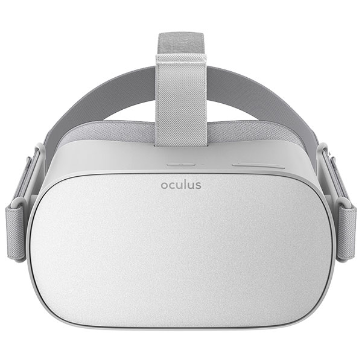

Which Headset is Right for You?
A standalone VR headset is a headset that can work without being tethered to a computer. Tethered headsets (Oculus, HTC Vive, PSVR, Windows Mixed Reality headsets) needs to be connected to a computer/game-console to function. ... However due to mobility, standalone headsets are less powerful.
There are currently nowhere near as many untethered VR headsets available in the burgeoning virtual reality market, compared to PC VR (tethered VR) and smartphone VR.
Tethered VR/AR HMDs must be connected by cable to a PC, harnessing the powerful processing power of the hardware in the connected PC or console. However, mobile VR headsets use the more widely accessible and available smartphones to deliver less advanced VR.
Standalone virtual reality headsets (a.k.a. untethered, wireless, standalone VR) don't require a PC or a smartphone to deliver a VR experience. The self-contained headsets (made popular by releases such as the Oculus Go) include built-in processors, GPU, sensors, battery, memory, displays, and more. In addition, as these VR goggles are uncabled, users don't have to limit themselves to a restricted space. In general, they offer a more powerful VR experience than smartphone VR but less powerful than tethered VR.
Top 5
DPVR M2P RO
DPVR (or Deepoon) has a few VR products available, however, this is the only standalone VR headset available from the manufacturer. One of the features is the ability to relatively quickly recharge the VR HMD. Although it has a high price-point, it doesn't offer the same high specs as other all-in-one headsets available. Furthermore, no controllers are available.
Pros: Low latency Quick battery recharge
Cons: No controllers Less affordable than most products in this VR category

GenBasic Quad HD
This untethered VR was one of the first HMDs in the category to be released, and it has good specs considering. With 110 degrees FOV, a decent refresh rate of 75Hz and the standalone VR is compatible with a variety of OS. However, due to the age of the device, it is the least future-proofed and user feedback was negative on the comfort and content available.
Pros: Affordable price-point Runs on multiple OS
Cons: Dated technology Poor comfort and wearability Bad ventilation and can overheat

HTCViveFocus
The VIVE FOCUS is one of the few standalone VR headsets to have 6DoF (6 Degrees of Freedom), hence the much higher price-point. However, this HMD does offer a range of features such as additional 2TB storage, basic gesture tracking, and longer battery life compared to other devices in this category.
Pros: Built-in microphone and speakers Ongoing software updates for improvements 6DoF
Cons: High price-point

Lenovo Mirage Solo
This standalone VR headset is not as affordable as other options on our list, but it has better specs compared to some of the other HMDs available. The Mirage Solo offers a more immersive VR experience than other VR headsets lacking 6DoF. On the downside is the heavy, large design making is less portable for users.
Pros: Great storage and memory options High accuracy of positional tracking Long battery life
Cons: Bulky design, heavy and uncomfortable to wear & not ideal for portability Lacks built-in speakers A shortfall in great content

Oculus GO
The Oculus Go is arguably the most well-known example of standalone VR, therefore it is credited with increasing the visibility of VR in the mass market. The HMD is very easy to use and the plug and play setup caters for beginners and experienced users. The Oculus Go provides accessible VR of very good quality at this price-point.
Pros: Affordable all-in-one VR Comfortable design and fit Large range of content available
Cons: Only 3DoF Basic controller Long recharge time
